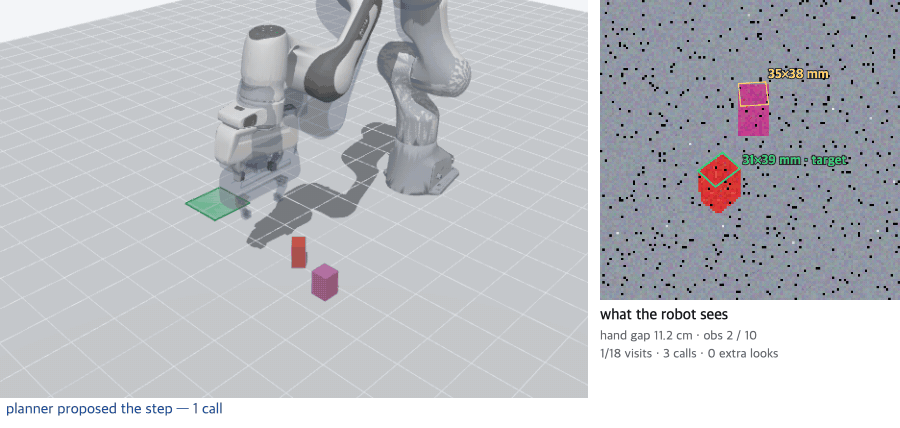
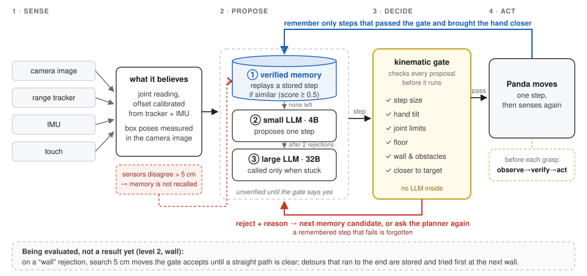
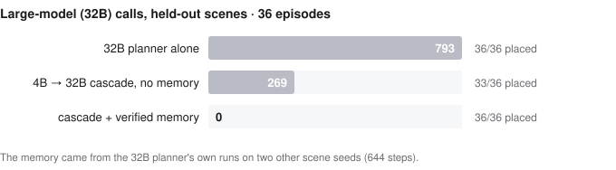
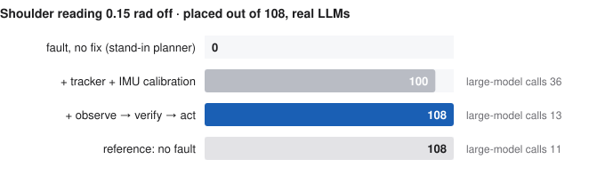
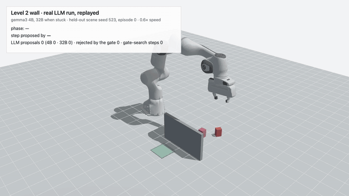
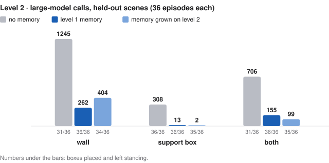
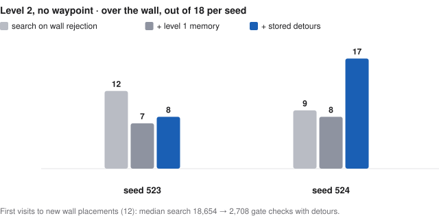

No oracle in the loop: memory and verification on a Panda
시뮬레이터의 정답값을 결정 경로에서 모두 빼고, 이미지·거리 추적·IMU·촉각만으로 집어 옮기기를 하면서 검증된 기억이 계산을 얼마나 줄이는지, 관절 읽기가 틀릴 때 무엇이 막는지를 본 예비 연구입니다.
A 4B model plans, a check decides before every step, and steps that passed become memory. Memory replaced the large model's calls; independent sensors and "observe → verify → act" kept the robot right when its own joint reading was wrong.

▶ Run the live demo here- 793 → 0 large-model calls, same 36/36 placed: a 4B planner with a 32B model's verified memory, held-out scenes
- 0 → 108/108 with a shoulder that reads 0.15 rad off: independent sensors recalibrate, then the robot grasps only after observing and verifying
- 8 of 108 episodes needed an extra look before grasping, almost all the very first one
- −78 to −96 % large-model calls on a harder level (a wall, a box to stack on, both) when the memory from the easier level is reused; 36/36 placed in each

Step 1 of this study showed that verified memory cuts LLM calls, and that checks before and after planning are both fooled when the robot's own joint reading is wrong. It still read the box position and the fingertip from the simulator. Here I removed every such shortcut from the decision loop and asked the same two questions again: can memory stand in for a large model, and what keeps the robot right when its own state is wrong?
What "no oracle" means here
- Which box, where, how turned. Camera image only (128 × 128, noisy); the target is the box whose short side measures ~32 mm.
- Where the hand is. Joint readings, checked against a range tracker (2 cm noise).
- Which way it points. IMU, 1° noise.
- Holding the right box. Finger opening after closing (touch).
Ground truth only scores the outcome. Measuring how a box is turned took any-orientation grasps from 54/108 to 108/108.
Sensor details
| What the robot needs | How it gets it |
|---|---|
| Where the box is, which one, its orientation | A camera image (ray-cast, 128 × 128, depth and colour noise, dropped pixels). Boxes are segmented, the top face is fitted, and the target is the one whose short side measures about 32 mm (the look-alike is 40 × 40). |
| Where the hand is | Joint readings through forward kinematics, checked against a range tracker (four anchors, 2 cm noise, occasional non-line-of-sight bias). |
| Which way the hand points | An IMU: gravity in the hand frame, 1° noise. |
| Whether it holds the right box | Finger opening after closing (touch). |
The simulator's ground truth is used only to score the outcome (placed and left standing) and to report errors. Boxes lie in any orientation, so the robot also has to measure how a box is turned and rotate its wrist: without that, 54/108 were placed; with it, 108/108.
1 · Memory stands in for the large model
A 4B model with the 32B model's verified memory placed every box without a single 32B call.

How memory works, and more seeds
The planner is asked one step at a time and every proposed step is checked by forward kinematics before it runs. Steps that passed and made progress are kept: the situation (fingertip-to-goal vector) and the fingertip move, re-solved by inverse kinematics when replayed, and only when the remembered situation is close relative to the distance left. The large model is called only after the small one is rejected twice. The memory came from the 32B planner's own runs on two other scene seeds (644 steps). On six further unseen seeds the same setting placed 107/108 and 108/108.
2 · When the robot's own state is wrong
A shoulder reading 0.15 rad off fools the gate, the memory and the planner at once. Two independent sensors plus "observe → verify → act" brought it from 0 to 108/108.

- Detect only: switch to the tracker when it disagrees. Rough tracker: 1 → 6/18. Not enough.
- Estimate: tracker + IMU together put the hand within 0.4–1.3 cm and 0.3–0.5°. Either alone failed.
- Calibrate online: 100/108 with real LLMs on unseen seeds.
- Observe → verify → act: wait for enough observations before grasping. 108/108.
The full path from collapse to recovery
- Removing the oracle broke the earlier fix. With an ideal fingertip sensor an independent check had solved this; with a realistic range tracker the same robot placed 1/18.
- Trust the tracker only when it disagrees. Comparing a 5-read median with the joint-based fingertip, and switching only on a large gap, helped with a good tracker (14 → 17/18) but not with a rough one (1 → 6/18): detecting the error was not enough.
- Estimate the error, not just detect it. Calibrating joint offsets from position alone left the hand tilted 3.6–6.5° and boxes fell over; from the IMU alone the fingertip was 3–5 cm off; both together: 0.4–1.3 cm and 0.3–0.5°. Four reviewing models had called the IMU unnecessary.
- Calibrate online. Fault with no fix: 0/108 (stand-in planner). Tracker + IMU calibration while moving: 97/108 with the stand-in planner, 100/108 with real LLMs on unseen seeds.
- Observe → verify → act. Every remaining failure was the first episode of a run: the robot grasped before calibration had enough observations. A check before the grasp (enough observations, hand position agrees within 5 cm, otherwise look again from nearby points) gave 108/108; first-episode failures 6 → 0; large-model calls 36 → 13.
3 · Harder levels
Everything above is level 1. I then made the task harder in steps, keeping all of level 1 (any orientation, camera only, touch) underneath, and asked whether memory built on the easier level still helps.
| Level | What changes | Status |
|---|---|---|
| 1 | Boxes in any orientation, a look-alike box, camera only; a shoulder reading off by 0.15 rad | done (sections 1–2) |
| 2 | A tall block between the boxes and the goal; a support box, placed differently in every scene, that the target must be stood on and that the robot finds by camera; both together | done (below) |
| 3 | Five boxes including look-alikes, part of the view blocked, two boxes in a row, the shoulder fault starting in the middle of a run | test bed for the next study |
Level 2
The level 1 system alone placed 0/18 with a wall. With level 2 sensing and checks added, reusing level 1 memory cut large-model calls by 78–96 % and every box was placed. Without the waypoint, a search driven only by the gate's rejections got over the wall in 21/36 held-out episodes.


What level 2 adds, and finding the way over the wall without a waypoint
The level 1 system, unchanged, placed 0/18 with the wall, 3/18 with the support box and 0/18 with both (real LLMs, tuning seed). Level 2 adds a scene camera that measures the wall and the support from depth alone, gate checks for clearance over the measured wall and for the support as the new floor, the measured wall in the planner's prompt, and a carry waypoint above the measured wall.
Memory from level 1 cut large-model calls by 79 %, 96 % and 78 %. What it reused were level 1's lifting and level carrying steps: the way over the wall was the waypoint, not something the robot found. Without the waypoint, the planners (4B, escalating to 32B) kept proposing the same level step and did not get over the wall in any of 18 episodes on a tuning seed. Next I let the gate's rejections drive a search with no LLM in it: on a “wall” rejection it looks for 5 cm moves the gate accepts until a straight path to the target clears. Nothing tells it which way the wall is.
Pre-registered, two held-out seeds, 18 episodes each: the search got the box over the wall in 21/36. Storing the detours that ran to the end and trying them first at the next wall cut the search on the first visit to each new wall placement from a median of 18,654 gate checks to 2,708 (12 episodes), and crossings rose to 25/36. That rise came from one seed (17 vs 9); on the other it fell (8 vs 12). Level 1 memory without the detours lowered crossings to 15/36: on one seed, 5 of its 11 failures were the hand held against the floor, a rejection that does not start a search.

Level 3 (next study)
Built and checked with a stand-in planner, then tuned with the real LLMs on two scene seeds: with memory alone and the fault starting at visit 7, the robot placed 4/18 on each. The comparison on held-out scenes comes next; results will be added here. The live demo runs all three levels with the stand-in planner.
| Held-out scenes | placed | unsafe actions after the fault | large-model calls |
|---|---|---|---|
| level 1 memory | — | — | — |
| + calibrate, set faulty memories aside, check before grasping | — | — | — |
What a fault does to memory
The fault did not spoil the memories' geometry. It spoiled their outcome labels, and it left gaps: the faulty robot never got past grasping.
Details
Stored as task-space moves, memories recorded under the fault were consistent within the robot's own belief, and replayed steps worked as well as clean ones. But every episode failed, so every memory was marked bad and none was replayed. Marking only the fault period's outcomes as invalid (the tracker–reading gap detects it) cut planner calls 89 % compared with resetting memory on the easier task, but only 23 % on the harder one, because all the faulty robot's memories were approach steps.
What did not work
- Correcting faulty memories back into true coordinates made them worse: the faulty robot had never been near the goals, so none of the corrected situations were (0 % within 6 cm of a goal).
- Refusing to calibrate directions the sensors cannot observe (the wrist roll when the hand points down) cleaned up the estimate but placed fewer boxes than the usual calibration on the same seeds (100 vs 104/108) and shifted another joint. Dropped.
- Rotating boxes by up to ±45° did not make the task harder: the grip turned them square. Only any orientation did.
- On level 2, the 32B planner alone placed 1/36 in the worlds with the wall. The cause was my prompt, not the model: the sentence "keep the gripper above the wall" was attached to every phase, and it kept the hand up even when it had to reach down to grasp. That comparison is left out.
What I want to study next
쉬운 과제의 기억은 길이 주어지면 어려운 과제에서도 통했습니다. 길 자체를 검증과 기억으로 찾을 수 있는지, 그리고 고장이 남긴 경험의 빈칸을 어떻게 채울지를 보고 싶습니다.
Can a robot find the route itself from what its checks reject and what it remembers, and what fills the gaps a fault leaves in experience? The rule I would keep: observe, verify, then act at every phase switch.
Setup
MuJoCo 3.15, Franka Panda from MuJoCo Menagerie. Local models through Ollama at temperature 0 on an Apple M5 Pro laptop. Each comparison had its pass criteria written before running; selection was done on tuning seeds and judged once on seeds not used before. Code, logs and the pre-registrations are kept with the project.